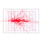

<body bgcolor="#ffffff">
 
<link href="html/table.css" rel="stylesheet" type="text/css">

<table  width="100%" border=0 cellspacing=0 cellpadding=0 style="padding: 0 0 5px 0; border: 1px solid #919699; background: #e9e9e9;">
<tr><td>&nbsp;<br>

<center>
   <b><i><font color="#000000" size="+2">g4view</font></i></b>
   <p>
   
</center>

<hr>

<table border=0><tr><td>  

  <li><a href="html/g4view_introduction.html" target="Contents">Introduction</a></li>
  <li><a href="html/g4view_download.html" target="Contents">Download and run</a></li>
  <li><a href="html/g4view_usage.html" target="Contents">User interface</a></li>
  <li><a href="html/g4view_calorimeter.html" target="Contents">First run</a></li>
  <li><a href="html/g4view_em.html" target="Contents">More em physics</a></li>
  <li><a href="html/g4view_gdml.html" target="Contents">Opening a GDML file</a></li>
  <li><a href="html/g4view_mac.html" target="Contents">G4 mac files</a></li>
  <li><a href="html/g4view_files.html" target="Contents">Data files</a></li>
  <li><a href="html/g4view_camera_panel.html" target="Contents">Camera panel</a></li>
  <li><a href="wasm/index.html" target="_top">WebAssembly</a></li>
  <li><a href="http://geant4.cern.ch" target="_top">Geant4</li>
  <li><a href="http://gbarrand.github.io" target="_top">softinex portal</li>

</td></tr></table>

<hr>

<center>
<address>
  <a href="mailto:barrand@lal.in2p3.fr">Guy Barrand</a>
  <font size="-1" color="#252E78">CNRS/IN2P3/LAL</font>
</address>
</center>

</body>

